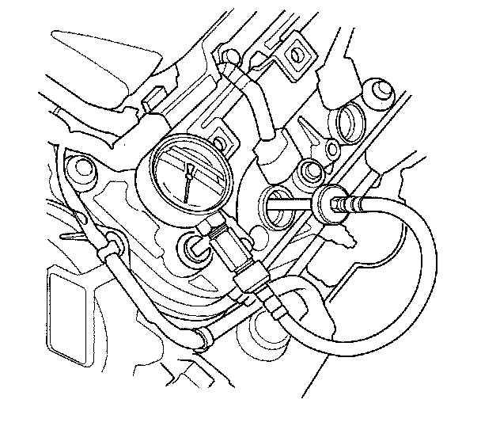

Compression Check: Testing and Inspection
Engine Compression InspectionNOTE: After the inspection, you must reset the powertrain control module (PCM). Otherwise, the PCM will continue to stop the fuel injectors from functioning.
1. Warm up the engine to normal operating temperature (cooling fan comes on).
2. Turn the ignition switch OFF.
3. Connect the Honda Diagnostic System (HDS) to the data link connector (DLC).
4. Turn the ignition switch ON (II).
5. Make sure the HDS communicates with the vehicle and the PCM. If it doesn't communicate, troubleshoot the DLC circuit.
6. Select PGM-FI, INSPECTION, then ALL INJECTORS OFF function on the HDS.
7. Turn the ignition switch OFF.
8. Remove the six ignition coils.
9. Remove the six spark plugs.
10. Attach the compression gauge to a spark plug hole.

11. Open the throttle fully, crank the engine with the starter motor and measure the compression.
Compression Pressure: Above 930 kPa (9.5 kgf/cm2, 135 psi)
12. Measure the compression on the remaining cylinders.
Maximum Variation: Within 200 kPa (2.0 kgf/cm2 28 psi)
13. If the compression is not within specifications, check the following items, then remeasure the compression.
^ Damaged or worn valves and seats
^ Damaged cylinder head gasket
^ Damaged or worn piston rings
^ Damaged or worn piston and cylinder bore
14. Select PCM reset to cancel the ALL INJECTORS OFF function on the HDS.